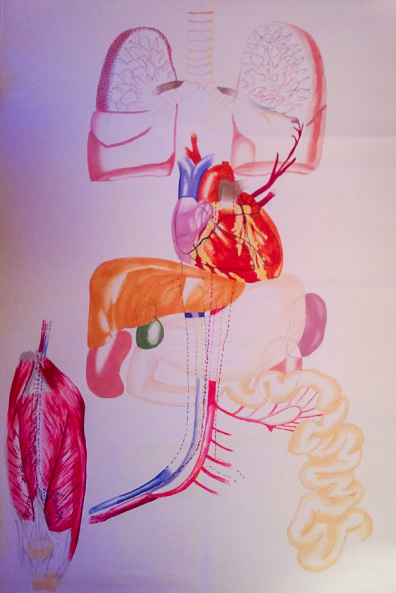
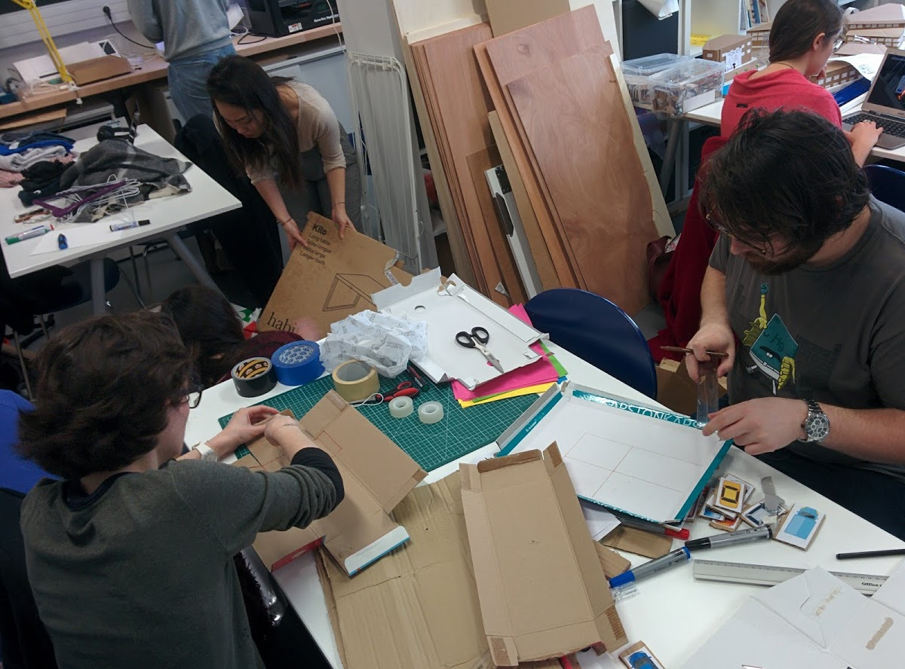
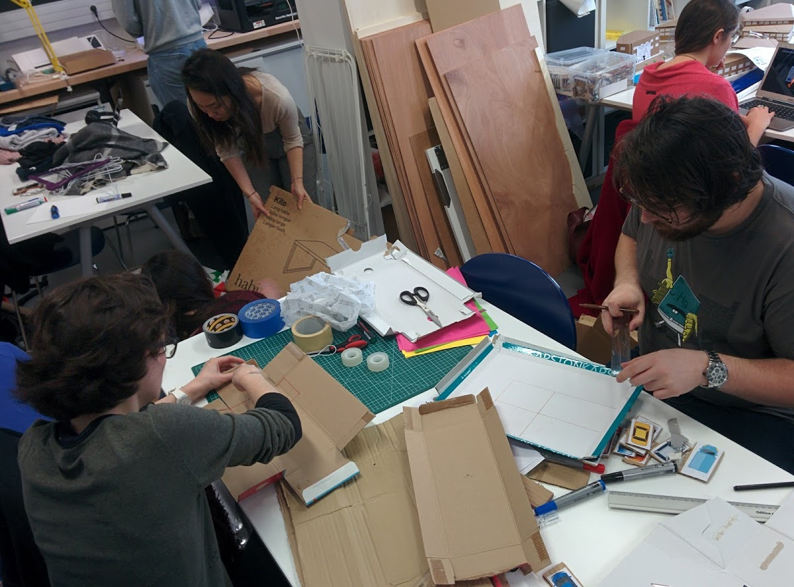
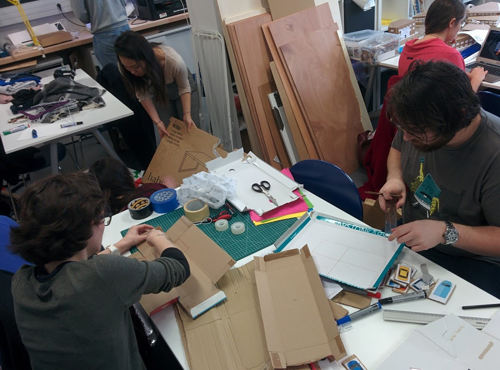

Business Projects
Eurovia
Eurovia is a affiliated company of Vinci Group. They have a specific problematic and with the design thinking process, we aim to understand their users and respond to their needs by innovatives solutions.
First, we searched to understand deeply the problematic. After, we questioned the users to find out their needs and their actual problems. By doing this, we found a specific subject to work on. We presented all our findings to the Eurovia's group project and during a creative meeting, we identified some working axes.
Now we are gathering our knowledge to delve into our innovative solutions by identify the conditions of application and prototyping them.
 

